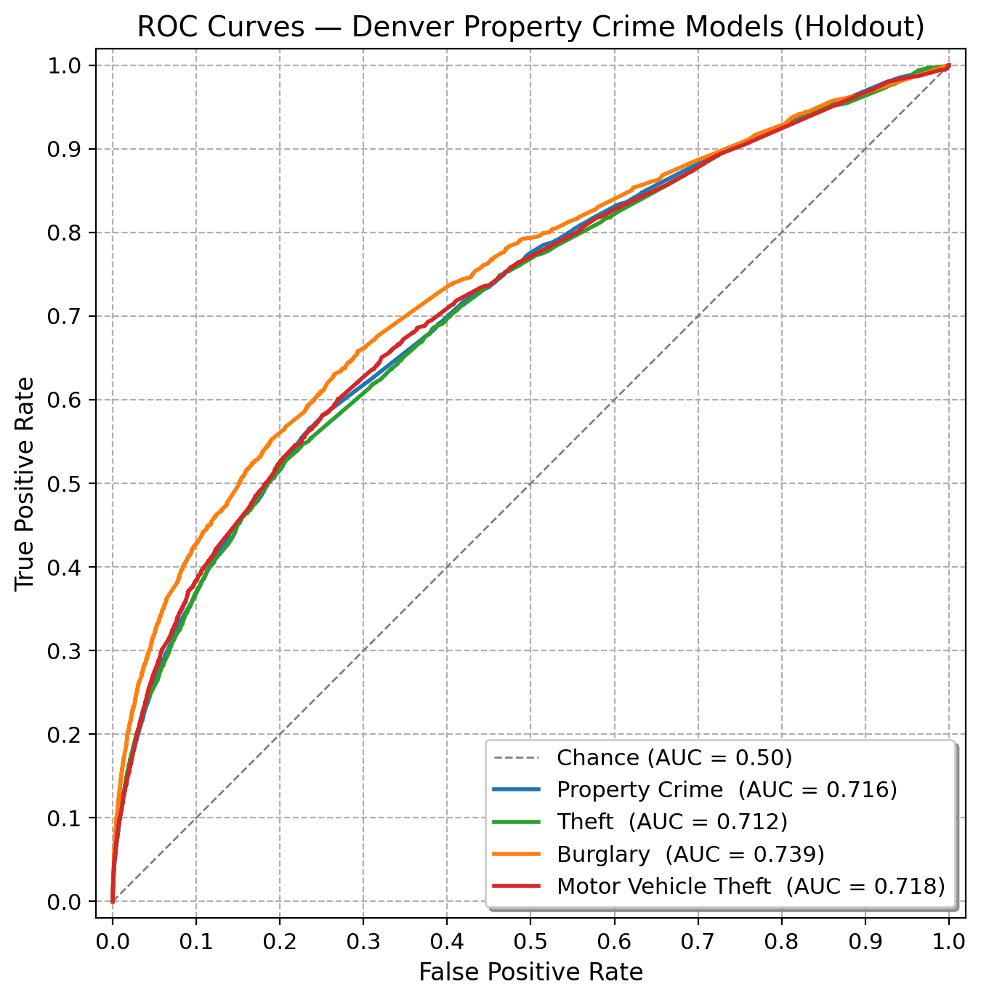
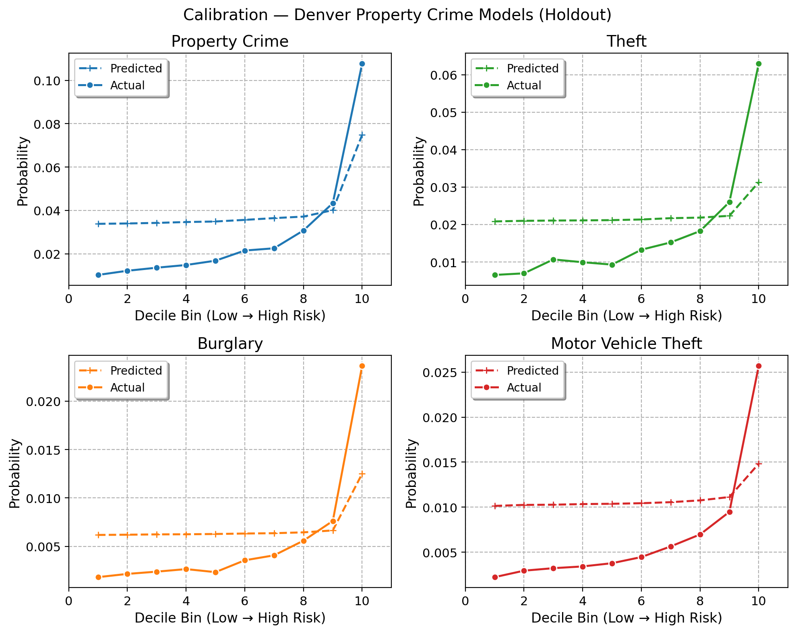
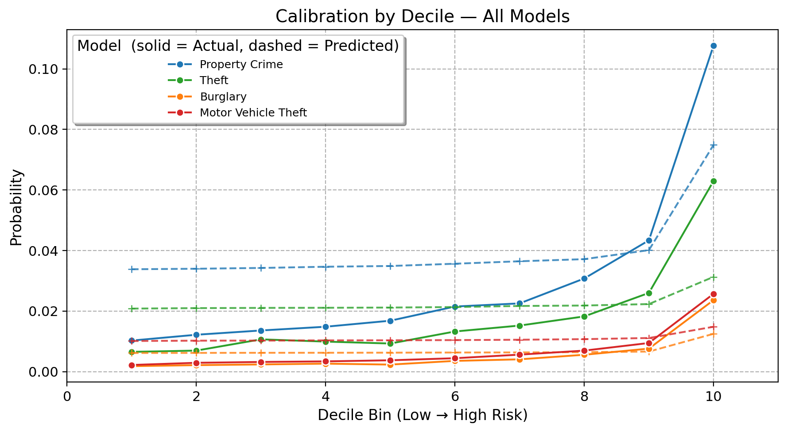

ROC and Calibration Plots — All Property Crime Models
Deviation from Pre-Registration
This document reports results for individual-level property crime prediction models evaluated on a held-out period. The original pre-registration specified individual-level violent crime prediction, identifying high-risk persons for future involvement in gun violence, robbery, aggravated assault, and related offenses, to support a planned randomized home-visit intervention conducted in partnership with Denver Police Department.
The present analysis reflects the same analytical framework specified by the preregistration, but shifts its focus to property crime outcomes. This shift reflects a change in Denver PD’s operational priorities.
ROC Curves
Calibration Plots


Model Accuracy
Four gradient-boosted regression models (LightGBM and CatBoost) were evaluated on a held-out period to predict victim-weighted aggregate property crime, theft, motor vehicle theft, and burglary counts. Performance is assessed via three diagnostics: (1) standard AUC on the binary outcome, (2) weighted AUC matching which tests the models’ ability to identify repeat offenders, and (3) probability calibration across decile bins.
Property Crime
| Metric | Value |
|---|---|
| Holdout N | 493,921 |
| Base rate | 2.81% positive |
| Standard AUC | 0.716 |
| Weighted AUC (tuning criterion) | 0.759 |
| Top-1,000 capture (victim-weighted) | 2,232 events |
| Top-1,000 capture (unweighted cells) | 433 individuals with ≥1 event |
| Expected under random (unweighted) | ~28 individuals |
The aggregate property crime model achieves a standard AUC of 0.716 and a weighted AUC of 0.759, indicating that the model can distinguish frequent offenders better than chance and better than the field accepted rate level of 0.7. The model successfully identfies 433 of the top 1000 individuals, far more than the 28 expected under random allocation, and resulting in coverage of 2,232 property crime events. Because it aggregates all subtypes, this model provides the broadest spatial signal and as models progress into less frequent property crime subtypes, models’ predictive capabilities
Theft
| Metric | Value |
|---|---|
| Holdout N | 493,921 cells |
| Base rate | 1.74% positive |
| Standard AUC | 0.712 |
| Weighted AUC (tuning criterion) | 0.766 |
| Top-1,000 capture (victim-weighted) | 1,901 individuals |
| Top-1,000 capture (unweighted cells) | 346 individuals with ≥1 event |
| Expected under random (unweighted) | ~17 individuals |
Theft produces the highest weighted AUC (0.766) of the individual subtype models, consistent with theft being the most spatially concentrated property crime category and therefore most amenable to predictive targeting. The theft model identified 346 individuals in the top 1000, far more than the 17 expected by random chance, offering coverage of 1901 theft events in the sample space. Further, the calibration plot shows reasonable agreement between predicted probabilities and observed rates across decile bins.
Burglary
| Metric | Value |
|---|---|
| Holdout N | 493,921 cells |
| Base rate | 0.55% positive |
| Standard AUC | 0.739 |
| Weighted AUC (tuning criterion) | 0.756 |
| Top-1,000 capture (victim-weighted) | 243 individuals |
| Top-1,000 capture (unweighted cells) | 152 individuals with ≥1 event |
| Expected under random (unweighted) | ~6 individuals |
Burglary is the rarest subtype in this study area (0.55% positive rate). Despite the low base rate, the model recovers a weighted AUC of 0.756, demonstrating that meaningful spatial signal is recoverable even for infrequent events. The Poisson loss function used during training is appropriate for the count-based, overdispersed nature of burglary data.
Motor Vehicle Theft
| Metric | Value |
|---|---|
| Holdout N | 493,921 cells |
| Base rate | 0.67% positive |
| Standard AUC | 0.718 |
| Weighted AUC (tuning criterion) | 0.729 |
| Top-1,000 capture (victim-weighted) | 235 individuals |
| Top-1,000 capture (unweighted cells) | 150 individuals with ≥1 event |
| Expected under random (unweighted) | ~7 individuals |
Motor vehicle theft yields the lowest weighted AUC (0.729) among the four models, suggesting that spatial patterns for vehicle theft are more diffuse or temporally unstable compared to the other subtypes. This is consistent with its level of occurrence in the sample space, seeing a base rate of only 0.67%.
Summary
All four models perform above the random-chance baseline (AUC = 0.50), as well as the field-accepted quality threshold of AUC = 0.7. However, per the specifications of the preregistration, only the total property crime and theft models successfully identified over 200 individuals in the top 1000, rendering the burglary and motor vehicle theft models unsuccessful. While this does not necessarily mean these outcomes are not worth further modeling, this may speak to the simple infrequency of burglary and motor vehicle theft in the sample space. With base rates of 0.55% and 0.67%, respectively, it is possible that in order to reach the threshold of 200, models would need to consistently identify one-time offenders or victims.
This points to an identified struggle for machine learning models when dealing with infrequent outcomes: predictive value of a model is inherently bounded the actual rate of the outcome (Wheeler, Worden & Silver, 2019). The infrequent nature of motor vehicle theft and burglary not only requires models to identify single-instance offenders or victims at a higher rate, who may be notably more difficult to predict than those with higher offender/victim counts, even in the midst of an extremely high AUC, we encounter the issue of Bayes’ theorem, where positives produced by the model become more likely to be false, not as a shortcoming of the model, but as an artifact of the underlying prevalence in the population. Therefore, at this stage of the analysis, we recommend that implenetation of models remains within total property crime and theft outcomes, allowing for further methdological inquiry into modeling of burgalry and motor vehicle theft.